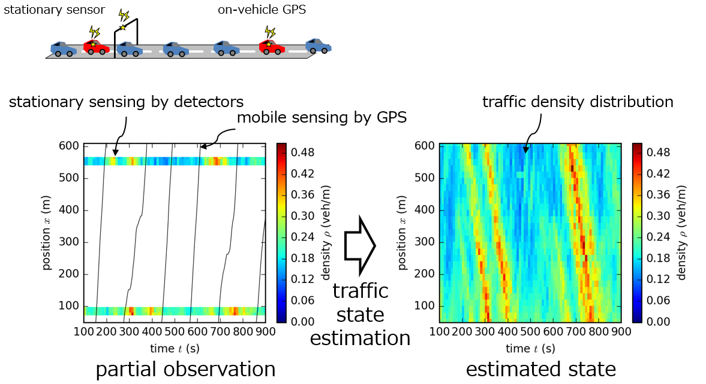
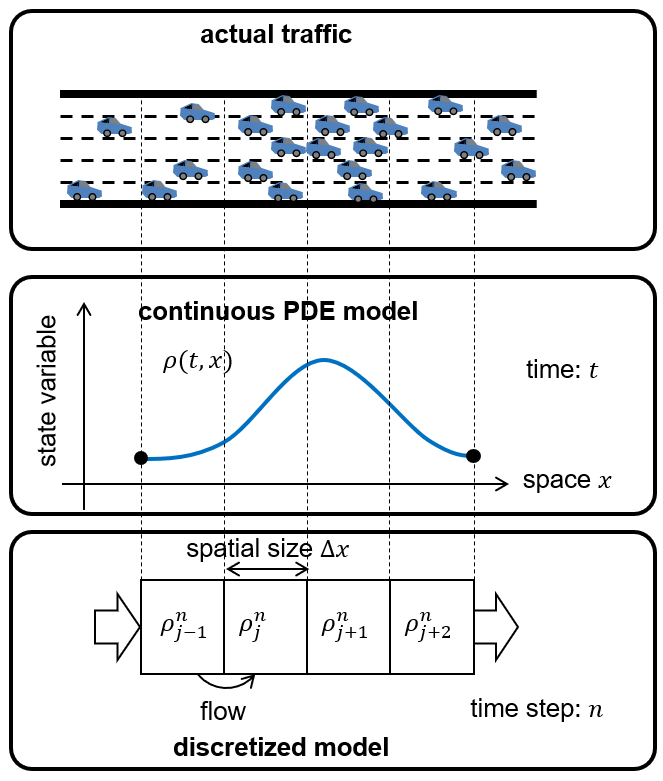
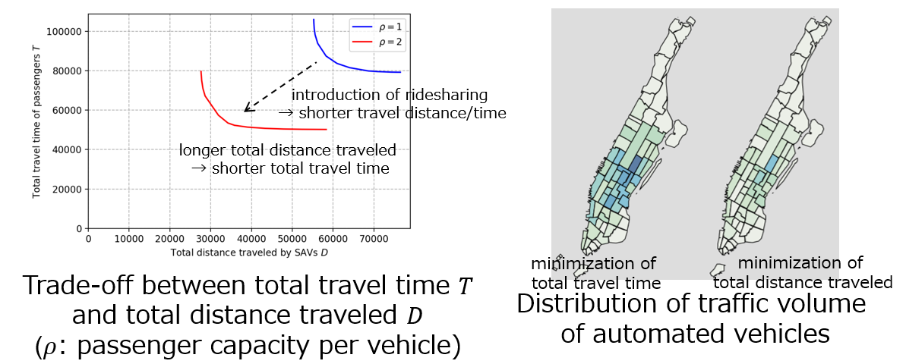
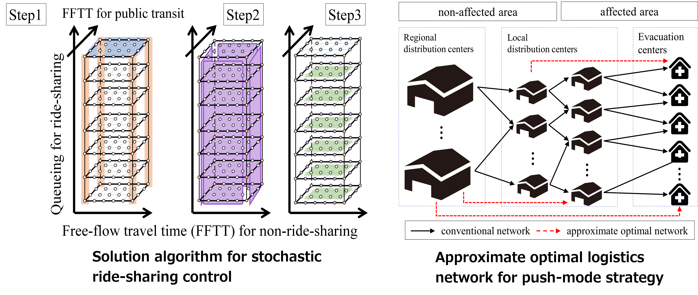

Research themes
Transportation is essential in our lives. It is used in every aspect of society including commuting, shopping, logistics, travel, and evacuation. However, transportation comes with significant issues such as congestion and environmental impact, and solving these issues is desired for the realization of a better society.
Transportation is a system that integrates physics and human behavior. For instance, the movement of cars follows the equations of motion. On the other hand, human thought is unique to humans and cannot be accurately replicated (yet). This hybrid system possesses many unresolved questions, making it an interesting subject worthy of research and innovation.
Based on these social significance and intrigue, our lab studies transportation, both vehicular and human, using theory and data based on mathematical and computer/data scientific approaches. Physical theories clearly explain the mechanisms of phenomena and provide guidelines for controlling them. On the other hand, the large amount of data available today provides us with various insights through means such as machine learning. The goal of our lab is to contribute to the realization of better transportation by appropriately combining theory and data, and to conduct interesting research in the process.
Traffic state estimation, data analysis, and control
Estimate and analyze traffic conditions of entire road networks from limited observation data.
Traffic flow theory
Mathematical modeling and simulation of vehicle, pedestrian, and rail flow dynamics.
Next-gen transportation systems
Theoretical foundations for automated vehicles, ridesharing, and MaaS.
Stochastic transportation and logistics systems
Control under uncertainty — from disaster logistics to daily traffic.
Traffic state estimation, data analysis, and control
Automobile traffic plays a vital role in today's society, but its efficiency is being reduced by congestion, a problem that needs to be solved. However, the road network is so vast that no one knows exactly when, where, and to what extent congestion occurs. Therefore, we are developing and verifying traffic state estimation methods that infer the traffic condition of the entire road network based on limited observation data. Furthermore, based on the obtained data and estimation results, applications such as analyzing the nature of traffic and finding the optimal control are also studied. The data are such as GPS on smartphones and car navigation systems and road-side vehicle detectors. We use methodologies such as traffic flow theory, data assimilation, and machine learning.

Traffic flow theory
Traffic flow theory is a mathematical concept that describes the collective behavior of automobile vehicles. It is used to simulate traffic flow in road networks and as a basis for traffic control and traffic state estimation. It can also be used to describe the flow of pedestrians and trains. In our lab, we are improving the models and implementing it as a simulation. We use methodologies such as partial differential equations and numerical simulation.
Please try our easy-to-use traffic flow simulation on web browser.


Next-gen transportation systems
Next-gen transportation systems such as automated vehicles and ridesharing have various possibilities. Our lab studies the fundamental and mathematical theories for realizing a better society by using these systems. For example, we are dealing with data-driven optimal dispatch control for automated vehicles, matching for ridesharing, and urban transportation system design for these systems. We use methodologies such as mathematical optimization, reinforcement learning, simulation, and data analysis.

Stochastic transportation and logistics systems
Transportation and logistics managers inevitably encounter uncertainties. In daily traffic such as commuting, they require real-time control while exploiting observations of traffic states that fluctuate stochastically. Meanwhile, in the aftermath of disasters, they require control assuming limited observations due to damaged communication infrastructure. Our lab develops stochastic control and decentralized control of uncertain transportation and logistics systems and solution algorithms, based on their theoretical analyses. We use methodologies such as mathematical optimization, optimal control, dynamic programming, stochastic programming, and numerical simulation.

Skills
Our educational policy aims to equip students with the necessary skills to understand (or create) mathematical models that abstract real-world phenomena, solve or compute such models, perform statistical analysis of data, develop computer programs, and write logically. We place emphasis on developing a solid understanding of principles and their application to the expression and resolution of real problems.
More specifically, the following skills, knowledge, and tools are mainly used for our research. It is not necessary to be able to use them at the time of assignment to the laboratory, but they can be acquired through research. We welcome those who wish to acquire these skills.
- Computer programming (mainly Python)
- Computer simulation
- Mathematical optimization
- Partial differential equations
- Probability and statistics
- Machine learning / data science
- LaTeX